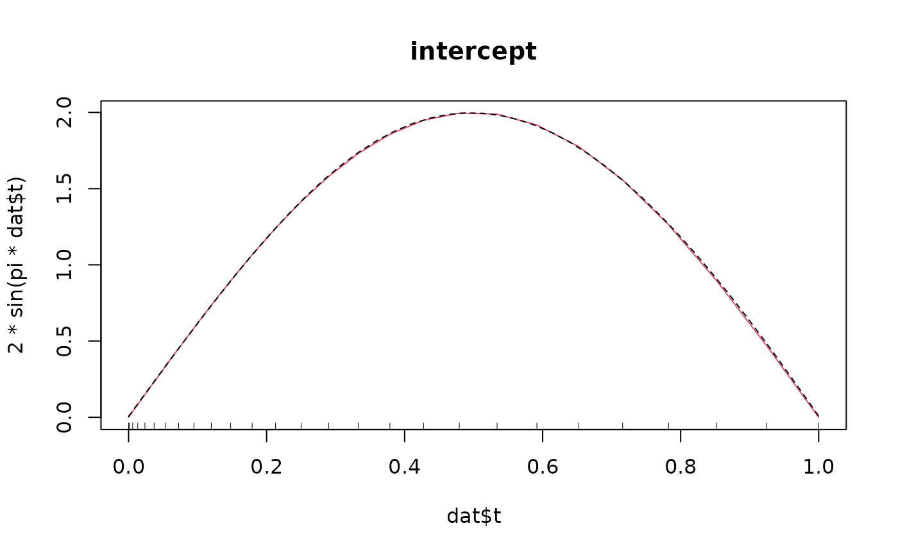
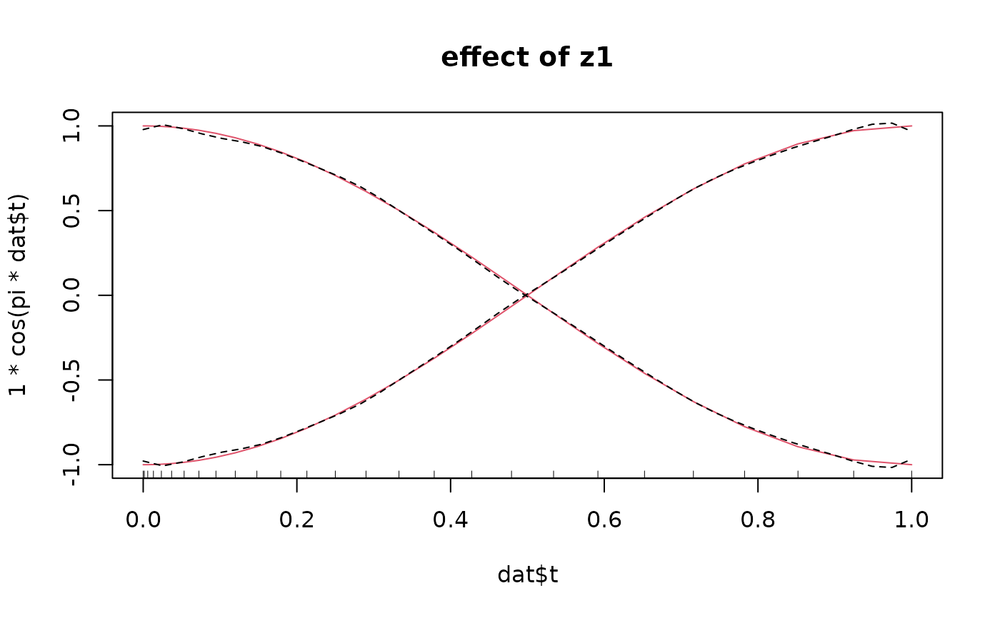

Constrained base-learners for fitting effects of scalar covariates in models with functional response
Usage
bbsc(
...,
by = NULL,
index = NULL,
knots = 10,
boundary.knots = NULL,
degree = 3,
differences = 2,
df = 4,
lambda = NULL,
center = FALSE,
cyclic = FALSE
)
bolsc(
...,
by = NULL,
index = NULL,
intercept = TRUE,
df = NULL,
lambda = 0,
K = NULL,
weights = NULL,
contrasts.arg = "contr.treatment"
)
brandomc(..., contrasts.arg = "contr.dummy", df = 4)Arguments
- ...
one or more predictor variables or one matrix or data frame of predictor variables.
- by
an optional variable defining varying coefficients, either a factor or numeric variable.
- index
a vector of integers for expanding the variables in
....- knots
either the number of knots or a vector of the positions of the interior knots (for more details see
bbs).- boundary.knots
boundary points at which to anchor the B-spline basis (default the range of the data). A vector (of length 2) for the lower and the upper boundary knot can be specified.
- degree
degree of the regression spline.
- differences
a non-negative integer, typically 1, 2 or 3. If
differences= k, k-th-order differences are used as a penalty (0-th order differences specify a ridge penalty).- df
trace of the hat matrix for the base-learner defining the base-learner complexity. Low values of
dfcorrespond to a large amount of smoothing and thus to "weaker" base-learners.- lambda
smoothing parameter of the penalty, computed from
dfwhendfis specified.- center
See
bbs.- cyclic
if
cyclic = TRUEthe fitted values coincide at the boundaries (useful for cyclic covariates such as day time etc.).- intercept
if
intercept = TRUEan intercept is added to the design matrix of a linear base-learner.- K
in
bolscit is possible to specify the penalty matrix K- weights
experiemtnal! weights that are used for the computation of the transformation matrix Z.
- contrasts.arg
Note that a special
contrasts.argexists in packagemboost, namely "contr.dummy". This contrast is used per default inbrandomc. It leads to a dummy coding as returned bymodel.matrix(~ x - 1)were the intercept is implicitly included but each factor level gets a separate effect estimate (for more details seebrandom).
Value
Equally to the base-learners of package mboost:
An object of class blg (base-learner generator) with a
dpp function (data pre-processing) and other functions.
The call to dpp returns an object of class
bl (base-learner) with a fit function. The call to
fit finally returns an object of class bm (base-model).
Details
The base-learners bbsc, bolsc and brandomc are
the base-learners bbs, bols and
brandom with additional identifiability constraints.
The constraints enforce that
\(\sum_{i} \hat h(x_i, t) = 0\) for all \(t\), so that
effects varying over \(t\) can be interpreted as deviations
from the global functional intercept, see Web Appendix A of
Scheipl et al. (2015).
The constraint is enforced by a basis transformation of the design and penalty matrix.
In particular, it is sufficient to apply the constraint on the covariate-part of the design
and penalty matrix and thus, it is not necessary to change the basis in $t$-direction.
See Appendix A of Brockhaus et al. (2015) for technical details on how to enforce this sum-to-zero constraint.
Cannot deal with any missing values in the covariates.
References
Brockhaus, S., Scheipl, F., Hothorn, T. and Greven, S. (2015): The functional linear array model. Statistical Modelling, 15(3), 279-300.
Scheipl, F., Staicu, A.-M. and Greven, S. (2015): Functional Additive Mixed Models, Journal of Computational and Graphical Statistics, 24(2), 477-501.
Examples
#### simulate data with functional response and scalar covariate (functional ANOVA)
n <- 60 ## number of cases
Gy <- 27 ## number of observation poionts per response curve
dat <- list()
dat$t <- (1:Gy-1)^2/(Gy-1)^2
set.seed(123)
dat$z1 <- rep(c(-1, 1), length = n)
dat$z1_fac <- factor(dat$z1, levels = c(-1, 1), labels = c("1", "2"))
# dat$z1 <- runif(n)
# dat$z1 <- dat$z1 - mean(dat$z1)
# mean and standard deviation for the functional response
mut <- matrix(2*sin(pi*dat$t), ncol = Gy, nrow = n, byrow = TRUE) +
outer(dat$z1, dat$t, function(z1, t) z1*cos(pi*t) ) # true linear predictor
sigma <- 0.1
# draw respone y_i(t) ~ N(mu_i(t), sigma)
dat$y <- apply(mut, 2, function(x) rnorm(mean = x, sd = sigma, n = n))
## fit function-on-scalar model with a linear effect of z1
m1 <- FDboost(y ~ 1 + bolsc(z1_fac, df = 1), timeformula = ~ bbs(t, df = 6), data = dat)
#> Use a smooth offset.
#> Warning: matrix is structurally rank deficient; using augmented matrix with additional 3 row(s) of zeros
#> Warning: matrix is structurally rank deficient; using augmented matrix with additional 3 row(s) of zeros
# look for optimal mSTOP using cvrisk() or validateFDboost()
# \donttest{
cvm <- cvrisk(m1, grid = 1:500)
#> The smooth offset is fixed over all folds.
#> For bolsc, the transformation matrix Z is fixed over all folds.
m1[mstop(cvm)]
#>
#> Model-based Boosting with Functional Response
#>
#> Call:
#> FDboost(formula = y ~ 1 + bolsc(z1_fac, df = 1), timeformula = ~bbs(t, df = 6), data = dat)
#>
#> 10
#> Squared Error (Regression)
#>
#> Loss function: (y - f)^2
#>
#>
#> Number of boosting iterations: mstop = 208
#> Step size: 0.1
#> Offset: 0.006 0.015 0.042 ... 0.909 0.484 0.008
#> Number of baselearners: 2
#>
# }
m1[200] # use 200 boosting iterations
#>
#> Model-based Boosting with Functional Response
#>
#> Call:
#> FDboost(formula = y ~ 1 + bolsc(z1_fac, df = 1), timeformula = ~bbs(t, df = 6), data = dat)
#>
#> 10
#> Squared Error (Regression)
#>
#> Loss function: (y - f)^2
#>
#>
#> Number of boosting iterations: mstop = 200
#> Step size: 0.1
#> Offset: 0.006 0.015 0.042 ... 0.909 0.484 0.008
#> Number of baselearners: 2
#>
# plot true and estimated coefficients
plot(dat$t, 2*sin(pi*dat$t), col = 2, type = "l", main = "intercept")
plot(m1, which = 1, lty = 2, add = TRUE)

plot(dat$t, 1*cos(pi*dat$t), col = 2, type = "l", main = "effect of z1")
lines(dat$t, -1*cos(pi*dat$t), col = 2, type = "l")
plot(m1, which = 2, lty = 2, col = 1, add = TRUE)
